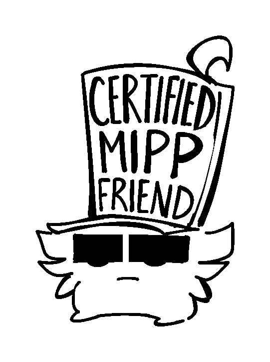

Hi! My name is Sebastian, I’m an illustrator homed in the UK.
I like to draw and create art in general, in mainly the genre of
I have a particular interest in the creatures that come from folklore.
I even created a book about them, that was presented in a way as if they where real!
if you're interested in any the that, feel free to check out my Art Portfolio or contact me